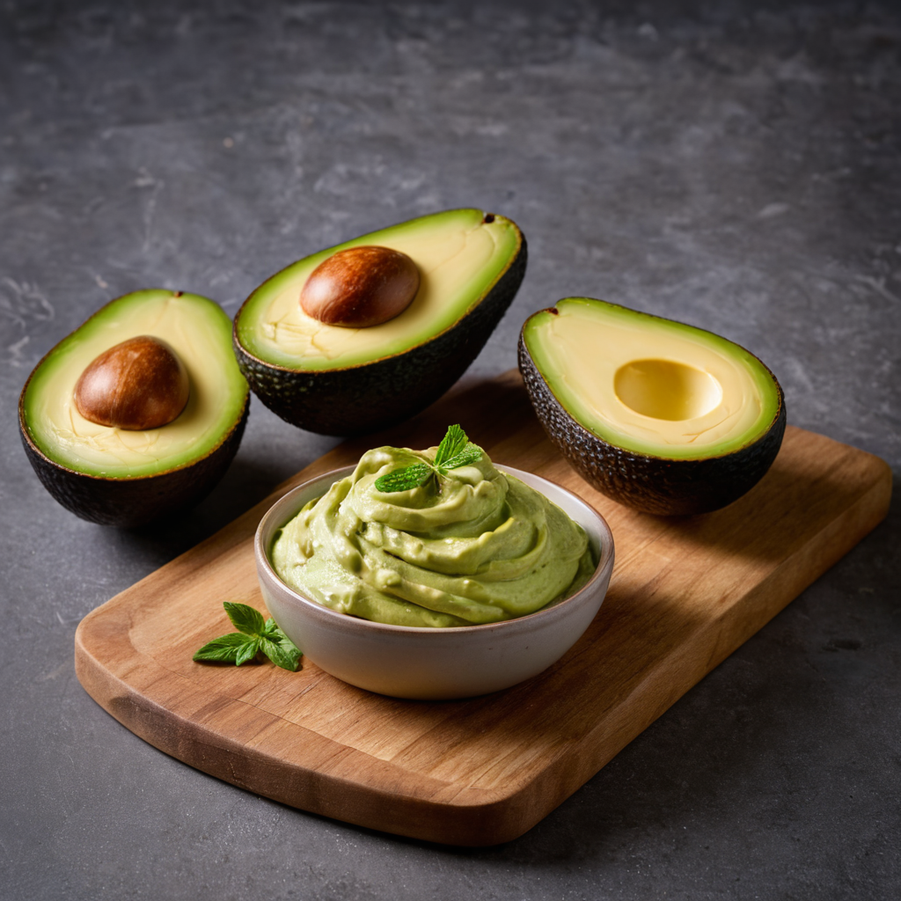

Hozzávalók:
- 2 érett avokádó
- 1-2 gerezd fokhagyma, zúzva vagy reszelve
- 1-2 ek friss citromlé vagy limelé
- 2 ek apróra vágott friss korianderlevél vagy petrezselyem (opcionális)
- Csípős paprika, apróra vágva (opcionális)
- Só és frissen őrölt fekete bors ízlés szerint
Elkészítés:
- Vágd fel az érett avokádókat hosszában, távolítsd el a magot, majd kanalazd ki a húsukat egy tálba.
- Törj vagy törj fel az avokádóhúst egy villa segítségével, hogy pépes állagot kapj.
- Adj hozzá 1-2 gerezd zúzott vagy reszelt fokhagymát az avokádóhoz, majd keverd össze.
- Adj hozzá 1-2 evőkanál friss citromlevet vagy limelevet az avokádóhoz, hogy frissességet adj hozzá.
- Opcionálisan keverj hozzá 2 evőkanál apróra vágott friss korianderlevelet vagy petrezselymet, valamint csípős paprikát az extra ízekért.
- Ízlés szerint sózd és borsozd meg az avokádókrémet.
- Keverd össze az összetevőket alaposan, hogy az ízek jól összeérjenek, és a krém sima legyen.
- Ha szeretnéd, tálald az avokádókrémet friss zöldségekkel, pirítóssal vagy tortillachipsekkel.